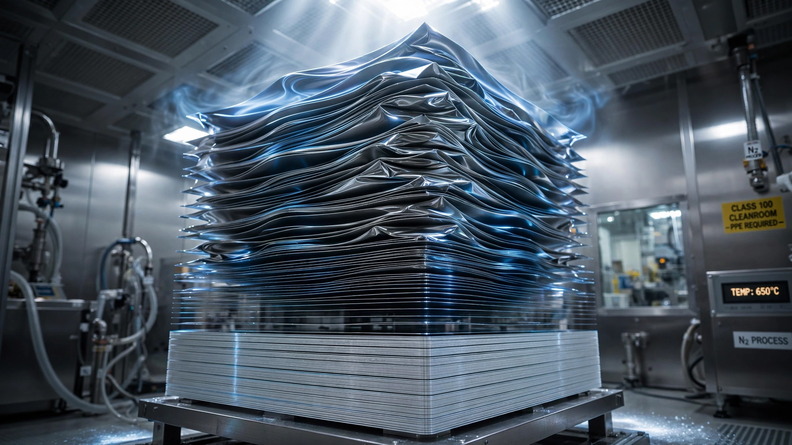

SK Hynix's CEO Just Declared the Worst Memory Shortage in History. The Yield Math Shows Why $800 Billion Can't Fix It.
The memory chip industry has pledged over $800 billion in new investment since late June. SK Hynix's CEO says demand will exceed supply beyond 2030 anyway. The reason is buried in the exponential yield math of stacking memory layers for AI chips, a physics problem that no amount of capital can buy its way past.

On Friday, July 11, Kwak Noh-jung stood on a trading floor he'd never expected to visit and watched his company's stock open at $170 per share. SK Hynix's Nasdaq debut raised $26.5 billion, the largest U.S. share sale by a foreign company in history. Then the CEO said something no investor wanted to hear: "Next year will be the worst year in the industry's history from the supply perspective."
Not a warning. A forecast, delivered on the same day his company's stock soared 13% on a market that supposedly prices in all known information. Demand for the memory chips that power AI systems will exceed supply "even beyond 2030," Kwak told Reuters, despite his company's record $31 billion operating profit in 2025 and aggressive capacity expansion across South Korea, Indiana, and potentially Japan or Southeast Asia.
This declaration landed two days after Micron boosted its U.S. investment commitment to $250 billion through 2035, up from $200 billion announced just thirteen months ago. It arrived two weeks after South Korea unveiled a 911-trillion-won ($591 billion) semiconductor plan, with Samsung and SK Hynix each pledging $266 billion for new fabs. Together with Nanya Technology's $6.2 billion 2027 capex commitment, the memory industry has announced more than $800 billion in investment in the span of fourteen days.
Eight hundred billion dollars. And the man at the center of the AI memory supply chain says it won't be enough. He's almost certainly right, and the reason has nothing to do with money.
The Physics of Stacking
AI doesn't run on ordinary memory. Inside Nvidia's data-center GPUs, the ones training ChatGPT, powering Meta's recommendation engines, and running Google's Gemini, sits a product called High Bandwidth Memory, or HBM. Conceptually it's deceptively simple: take individual DRAM memory dies, grind each one thinner than a human hair, punch thousands of microscopic copper pillars called through-silicon vias (TSVs) through each layer, stack them eight or twelve high, and bond them together into a single chip that moves data at speeds conventional memory can't touch.
Current HBM3E stacks eight DRAM dies plus a base logic die into a package roughly the thickness of a credit card. It delivers 1.2 terabytes per second of bandwidth, but that's not enough for where AI is heading. HBM4, due in volume production by late 2027, doubles the interface width to 2,048 bits and pushes bandwidth toward 2.8 TB/s. To get there, the industry needs 16-layer stacks, double today's eight. That's where the math turns hostile.
The Compound Yield Tax
Every time you bond one DRAM layer to the next, something can go wrong. A speck of contamination between copper pads. A microscopic warpage from thermal stress during bonding. A through-silicon via that didn't fill cleanly. If any single bond fails, the entire stack (all sixteen layers, all seventeen dies) goes in the trash. You cannot unbond, swap a bad layer, and rebond; the stack is permanent.
Because yield losses compound exponentially with each additional layer, the math for higher stacks looks ugly. If each bonding step succeeds 97% of the time, roughly where SK Hynix sits today on its 8-layer HBM3E line, based on the company's disclosed ~80% overall stack yield, then the math for higher stacks looks like this:
| Per-Bond Yield | 8-Hi (HBM3E) | 12-Hi | 16-Hi (HBM4) | 16-Hi vs 8-Hi Loss |
|---|---|---|---|---|
| 99% | 93.2% | 89.5% | 86.0% | −7.7 pp |
| 98% | 86.8% | 80.1% | 73.9% | −14.9 pp |
| 97% | 80.8% | 71.5% | 63.3% | −21.6 pp |
| 96% | 75.1% | 63.7% | 54.0% | −28.1 pp |
| 95% | 69.8% | 56.9% | 46.3% | −33.7 pp |
At SK Hynix's current 97%-per-step rate, moving from 8 layers to 16 layers drops stack yield from 81% to 63%. One in three 16-layer stacks goes straight to scrap. But it gets worse: HBM4 replaces the passive base die with an active logic die manufactured by TSMC on advanced 4nm or 5nm process nodes. That logic die has its own yield, roughly 85% for a leading-edge chip of that complexity. Multiply it through: effective 16-Hi HBM4 yield is 0.85 × 0.633 = 53.8%.
Nearly half of every HBM4 stack a manufacturer produces gets thrown away, and that's not a rounding error; it's an existential constraint on output volume that explains why $800 billion in capital investment can coexist with the worst shortage in memory history.
30x the Silicon, One Chip
The yield tax creates a second problem that doesn't get nearly enough attention: wafer consumption. A standard DDR5 memory module uses one DRAM die. At roughly 95% yield, each good output chip costs about 1.05 input dies worth of silicon. Simple arithmetic.
An HBM4 16-layer stack needs 16 good DRAM dies plus one good logic die: 17 perfect components bonded in sequence. At the 53.8% effective stack yield calculated above, producing one good HBM4 chip consumes on average 31.6 input dies (17 ÷ 0.538). Compare that to DDR5's 1.05.
HBM4 consumes roughly 30 times more wafer area per good output chip than standard DDR5. And wafer starts aren't free. A 300mm DRAM wafer costs $2,000–$3,000 before processing. After advanced lithography, etching, deposition, and testing, the fully processed cost reaches $5,000–$8,000 per wafer. When you need 30x the silicon to produce the same number of output chips, that cost compounds into a structural constraint that no capital injection can bypass in the near term.
The Three Monopolies You've Never Heard Of
Even if yield rates held steady, the industry would still face a chokepoint in the equipment that makes stacking possible, because three companies control the critical path and none of them can scale fast enough to match the demand surge.
DISCO Corporation (TYO: 6146) commands approximately 80% of the world's precision dicing and grinding market. Before any DRAM layer can enter a stack, its wafer must be ground to roughly 30 micrometers, thinner than a sheet of aluminum foil, without introducing micro-fractures that would propagate through subsequent layers. DISCO's machines are the prerequisite for every advanced packaging operation on Earth. Their order backlog stretches beyond eighteen months.
Hanmi Semiconductor held a near-total monopoly on thermocompression bonding tools at SK Hynix until late 2025, when Hanwha won a competing order, reportedly at a higher price, per SemiAnalysis. In an industry where suppliers compete on cost, a customer paying more for an unqualified alternative signals how desperately they need production capacity from any source at all.
BE Semiconductor Industries (BESI, AMS: BESI) leads the global market for hybrid bonding equipment, the copper-to-copper direct fusion technology that HBM4's 16-layer stacks will require to stay within JEDEC's 775-micrometer thickness spec. Replacing solder micro-bumps with direct metal bonds at sub-micron alignment precision is the only path to making 16-layer stacks physically possible. BESI's capacity is finite, and the machines take months to build, install, and qualify on a customer's production floor before they can bond a single stack.
Building a new fab for $20 billion is useless if you can't get the bonding tools for another two years, and this is the constraint that $800 billion cannot buy its way around: equipment lead times are measured in years, not dollars.
The Strongest Case That This Is Overblown
The semiconductor industry has heard "worst shortage ever" before and managed to solve it. In 2021, automakers couldn't get $2 chips. By 2023, there was a glut. Memory is cyclical, and SK Hynix's CEO has an incentive to talk up scarcity: it justifies his pricing power and his stock's $170 opening print.
More substantively, yield improvement is not linear but logarithmic: the hardest gains come first, and each subsequent generation starts from a higher baseline. SK Hynix's HBM3E yield improved from roughly 60% at initial production to 80% within eighteen months. If that trajectory repeats with HBM4, and if TSMC's logic die yields climb toward 90% as the node matures, the effective 16-Hi yield could improve from our calculated 53.8% toward 70% within two years. JEDEC's 2025 decision to widen the HBM4 thickness tolerance to 775 micrometers was specifically designed to give manufacturers more room on die thinning, which reduces one of the biggest sources of warpage-related yield loss.
And the history of "this time the bottleneck is permanent" is the history of being wrong. NAND flash went from 48 layers to 236 layers in seven years, a pace that would have seemed absurd to anyone who ran the yield math on a 236-layer stack in 2017. Memory manufacturers have an astonishing track record of engineering their way out of physics constraints given enough time.
The Time Problem
That last phrase is the crux. Given enough time. The 2027 shortage isn't a prediction about what happens eventually — it's a prediction about what happens next year, when the gap between hyperscaler demand and available HBM supply peaks. Bank of America estimates that memory will account for 35–40% of $1.15 trillion in global hyperscaler capital expenditure in 2027, implying $400–$460 billion in memory purchases. UBS projects global DRAM will remain undersupplied until at least the second quarter of 2028. Jensen Huang told audiences last month that AI memory shortages would continue "for several years."
The investments announced in the past two weeks won't produce a single additional wafer before 2029 at the earliest. A greenfield fab takes three to five years from groundbreaking to volume production. TSMC's Phoenix plant broke ground in 2021 and shipped its first chips in 2025. Equipment from ASML, DISCO, and BESI has multi-year lead times. Recruiting and training the thousands of engineers needed to operate a leading-edge memory fab takes years, not quarters.
Nanya Technology's numbers illustrate the cycle's ferocity in a way that abstractions cannot. The Taiwanese memory maker's Q2 2026 results showed revenue up 684% year-over-year, net income up 1,324%, and gross margin swinging from negative 20.6% to positive 79.5% in twelve months, the kind of margin expansion that doesn't happen in normal industries but happens reliably when demand grows faster than supply and the supply constraint is physical rather than financial.
Limitations
This analysis uses SK Hynix's publicly disclosed HBM3E yield of approximately 80% for 8-Hi stacks to back-calculate a per-bond-step yield of ~97%, then extrapolates to 16-Hi stacks. The actual yield degradation at higher layer counts is likely worse than the exponential model suggests, because non-critical defects accumulate. A small warpage acceptable at layer four becomes fatal at layer twelve. However, SK Hynix, Samsung, and Micron treat exact yield figures as trade secrets, so the numbers presented here are directional estimates, not production data.
The 85% logic die yield used for HBM4's TSMC-manufactured base die is an industry consensus estimate for mature leading-edge nodes. Early production yields for the first HBM4 logic dies may be significantly lower; Samsung has reported 40% initial test yields for its 4nm HBM4 logic die. The 53.8% effective stack yield calculated here should be understood as a mid-maturity estimate, not a floor.
Equipment lead times and fab construction timelines are based on publicly reported industry averages. Specific projects may move faster or slower depending on regulatory approvals, workforce availability, and supply chain conditions.
What You Can Do
If you manage AI infrastructure procurement, the message is blunt: contract memory supply now for 2027–2028 delivery, accept long-term agreements at current pricing, and assume HBM availability will tighten, not ease. The spot market will be brutal.
If you're an investor evaluating semiconductor equipment stocks, the bottleneck math points toward three categories of companies: precision grinding (DISCO), advanced bonding (BESI, Hanmi, Hanwha), and packaging test (Advantest, Teradyne). These companies' revenue is physically constrained by how fast they can build machines, which means pricing power persists longer than in a normal cyclical upturn.
If you design AI systems, the shortage means optimizing memory bandwidth utilization becomes a competitive advantage. Techniques like quantization (running models at 4-bit or 8-bit precision instead of 16-bit), mixture-of-experts architectures (which activate only a fraction of parameters per token), and inference-time compute optimization aren't just nice engineering — they're the difference between deploying a product in 2027 and waiting until 2029 for enough HBM to arrive.
The Bottom Line
The memory industry can always build more fabs. What it cannot do is repeal the compound yield math of stacking silicon. Each additional layer in an HBM stack multiplies the probability of failure, and the equipment to grind, bond, and test those stacks at scale is controlled by a handful of companies with multi-year backlogs. SK Hynix went from an operating loss in 2023 to $31 billion in profit in 2025 — a $38 billion swing in 24 months — precisely because this bottleneck creates the kind of pricing power that normal markets don't allow. The $800 billion in announced investment will eventually widen the supply pipe. But "eventually" means 2029 at the earliest. For the next three years, the yield cliff is the ceiling. No amount of money changes that.